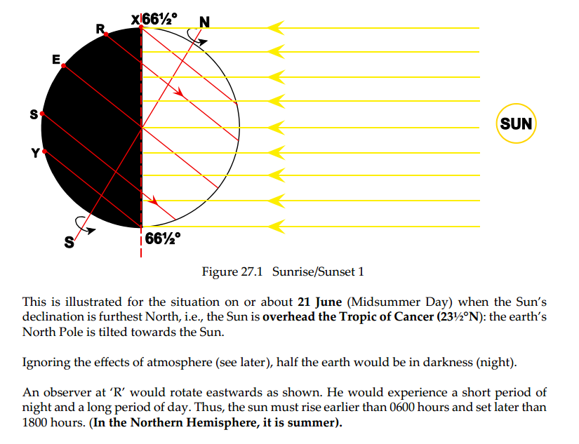

061-01-01 - The Solar System
The direction of the Earth's rotation on its axis is such that:
The Sun's declination is on a particular day 12°S. Midnight Sun may this day be observed: declination of the sun
061-01-02 - The Earth
Conversion angle = 0.5 convergency.
Distance = Change in Longitude (in minutes) × cos Latitude
An aircraft is in the position (86°N, 020°E). When following a rhumb line track of 085°(T) it will:
Point A:latitude 00°N/S
Point B:33°N 101°E An aircraft flies from waypoint 7 (63°00' N, 073°00'W) to waypoint 8 (62°00' N, 073°00' W). The aircraft position is (62°00' N, 073°10'W). The cross track distance in relation to the planned track is:
Position A = (56°00.0'S, 163°57.2'E)
Position B = (56°00.0'S, 171°47.4'W)
For the route from A to B the: On the Earth's ellipsoid one degree of latitude near the equator is: The rhumb line track between position A (45°00'N, 010°00'W) and position B (48°30'N, 015°00'W) is approximately: Waypoint 1:60°S 030°W
Waypoint 2:60°S 020°W
What will be the approximate latitude shown on the display unit of an inertial navigation system at longitude 025°W?
The direction of the Earth's rotation on its axis is such that:
- observed from the point above the North Pole, the rotation is counterclockwise.
- to describe a situation or relationship concerning the stars.
- sidereal day is of constant duration.
- moves with constant speed along the celestial equator.
- The maximum difference between apparent (real) time and Mean Time takes place in mid-November and is approximately 16 minutes. A second maximum difference takes place in mid-February and is approximately 14 minutes. In between these two, the difference is smaller.
- the apparent Sun is always in the plane of the ecliptic.
- states the difference in time of transit of the mean Sun and the apparent Sun any particular day.
- the Earth's speed of revolution in its orbit varies continuously, due to the orbit being elliptical.
- The apparent solar day is the period between two successive transits of the true sun through the same meridian.
- Spring equinox and autumn equinox. napéjegyenlőség
The Sun's declination is on a particular day 12°S. Midnight Sun may this day be observed: declination of the sun
- The angular distance of the sun north or south of the Celestial equator.
061-01-02 - The Earth
- considered to be a perfect sphere as far as basic (simple) navigation is concerned.
- an oblate spheroid.
- The point on the great circle with greatest latitude.
- is so small that it may be ignored when making ordinary maps and charts.
- is about 1:300.
- makes the difference between the polar diameter and the equatorial diameter about 22 NM.
- all answers are correct.
Conversion angle = 0.5 convergency.
Distance = Change in Longitude (in minutes) × cos Latitude
An aircraft is in the position (86°N, 020°E). When following a rhumb line track of 085°(T) it will:
- fly via a spiral to the North Pole.
- Has a plane that do not pass through the centre of the Earth.
- Orthodromic line. = Great circle
- 360*60*cos60= 10800 NM
Point A:latitude 00°N/S
Point B:33°N 101°E An aircraft flies from waypoint 7 (63°00' N, 073°00'W) to waypoint 8 (62°00' N, 073°00' W). The aircraft position is (62°00' N, 073°10'W). The cross track distance in relation to the planned track is:
- 10*cos62 = 4.7 NM R a track merre van a ponttól
- 12 700 km
- It is always 090° or 270°.
- A the rhumb line will in most cases be located closer to the equator than the great circle.
- B the great circle will in most cases be shorter of the two.
- C the great circle will in most cases run through an area of higher latitude than the rhumb line.
- D all statements are correct.
Position A = (56°00.0'S, 163°57.2'E)
Position B = (56°00.0'S, 171°47.4'W)
For the route from A to B the: On the Earth's ellipsoid one degree of latitude near the equator is: The rhumb line track between position A (45°00'N, 010°00'W) and position B (48°30'N, 015°00'W) is approximately: Waypoint 1:60°S 030°W
Waypoint 2:60°S 020°W
What will be the approximate latitude shown on the display unit of an inertial navigation system at longitude 025°W?
061-01-03 - Time and Time Conversions
A day is defined as:
Mean time
When proceeding, on a given date, along a parallel towards the East, the moment of sunrise will occur one hour earlier every 15° difference in longitude when it is expressed in:
At (54°N, 020°W) the sun rises on November 28th at 09:10 UTC. At (44°N, 020°W) the sun will rise: The local hour angle of the mean sun at 1200 LMT is:
A day is defined as:
- the period elapsed between two successive transits of a heavenly body.
- are given in LMT.
- is used in some countries.
- is used to extend the sunlight period in the evening.
- is introduced by setting the standard time forward by one hour.
- all answers above are correct.
- Close to the equinoxes the influence of latitude on the duration of daylight is at its smallest.
- UTC is slightly more accurate than GMT, but the difference between the two is so small that it has no importance in everyday navigation of aircraft.
- based on the time of transit of the apparent Sun.
- It is the time set by the legal authorities for a country or part of a country.
- Standard time is determined by the government of the appropriate state and does not necessarily follow the borders of 15° wide longitude zones.
- Some standard times may differ from UTC by other times than whole hours, because: all answers are correct.
- the time enforced by the legal authority to be used in a country or an area.
- Standard time for some areas is listed in the Air Almanac as UTC +13 instead of UTC -11. The reason for this is:
- keeping the same date as the political and or economical entity to which they belong.
Mean time
- introduce a constant measurement of time, independent of the daily variations in the movement of the Sun as observed from the Earth.
- both the direction of rotation of the Earth around its axis and its orbital rotation around the sun are the same.
- at the 180° E/W meridian, or in the vicinity of this meridian.
- It is partly on and partly in the vicinity of the 180° E/W meridian.
- should be prepared to increase your date by 1.
- The date will increase if you are crossing on a westerly heading.
- the length of the day will vary in the course of the year.
- Morning civil twilight is the period in the morning from the centre of the Sun is 6° below the horizon until the upper limb of the Sun appears at the horizon.
- the centre of the Sun is 6° below the celestial horizon.
- is generally longer in positions at high latitudes than in positions at lower latitudes.
- The declination of the Sun and the latitude of the observer will affect the duration of civil twilight.
- are the periods before sunrise and after sunset when the light is lower than when the Sun is above the horizon.
- (civil twillight) between sunset and when the centre of the Sun is 6° below the true horizon.
- sunset is the time when the observer at sea level sees the last part of the Sun disappear below the horizon.
When proceeding, on a given date, along a parallel towards the East, the moment of sunrise will occur one hour earlier every 15° difference in longitude when it is expressed in:
- UTC
At (54°N, 020°W) the sun rises on November 28th at 09:10 UTC. At (44°N, 020°W) the sun will rise: The local hour angle of the mean sun at 1200 LMT is:
- 000° At solar noon, at the observer's longitude on earth, the hour angle is 0.000 degrees, with the time before solar noon expressed as negative degrees, and the local time after solar noon expressed as positive degrees.
- enough to be used for all longitudes, when determining daylight conditions.
- but may need to be adjusted for observers at high altitudes.
- only for positions situated along the Greenwich meridian.
- all of the above answers are correct.
- cause the sunrise to occur earlier and the sunset to occur later.
- the body is passing the meridian of the observer or another specified meridian.
061-01-04 - Directions
Isogonic lines Jan 2002
Average annual increase 10'
Calculate the Variation in 2005:
Grid navigation:
A route is flown from (85°S, 100°E) to (85°S, 140°W). At 160°E the Grid Track (GT) and True track (TT) on a Polar Stereographic chart with a grid orientated on the 180° meridian are respectively: T V M D C
G convergency V M
Route A - B is drawn on a Polar Stereographic chart with the grid aligned with the Greenwich meridian. The True Track of the straight line at A (75°N, 010°W) is 080°. What is the Grid Track when passing the meridian 050°E?
Route A - B is drawn on a Polar Stereographic chart with the grid aligned with the Greenwich meridian. The true track of the straight line at A (75°S, 010°W) is 080°. What is the Grid Track when passing the meridian of 050°E?
Route A - B is drawn on a Southern Polar Stereographic chart whose grid is aligned with the Greenwich meridian. The true track of the straight line at A is 120°. When passing the meridian of 100°E the true track is 090°. The grid track of this route on the chart is:
N hem:
- The blue pole of the Earth's magnetic field is situated in North Canada.
- +- 10 deg!
- the variation is East when True North seems to be located West of Magnetic North.
- is a maximum of 180°.
- egyenlő mágneses eltérés (variation)
- converge at the north and south geographic and magnetic poles.
- 0 variation
- A line running through positions where the magnetic and the true meridians are parallel
- follows separate paths out of the North polar regions, one currently running through western Europe and the other through the USA.
- dip is zero.
- dip = cos-1(H/T)
- Aligns the compass needle
- is the resultant magnetic force in the horizontal plane where the compass is installed
- highest at magnetic equator
- is the component of the Earth's magnetic field which aligns the compass needle.
- is the resultant magnetic force in the horizontal plane in the position where the compass is installed.
- the horizontal component of the Earth's magnetic field.
- the horizontal direction of the Earth's magnetic field in that position, toward the Magnetic North Pole.
- The magnetic meridian is an imaginary line connecting the Magnetic South and North poles and can be taken as the magnetic force, lines along the surface of the Earth. That is, a compass needle will be parallel to the magnetic meridian.
- a freely suspended compass needle will stand vertical.
- the direction of the horizontal component of the Earth's magnetic field at that position.
- is strongest at the magnetic poles.
- the field's direction is from the magnets red pole to the magnets blue pole.
- The direction of a line referenced to Magnetic North.
- is stronger closer to the magnetic equator.
- directly with the horizontal component of the Earth's magnetic field.
- 1° in 5 years.
Isogonic lines Jan 2002
Average annual increase 10'
Calculate the Variation in 2005:
- 6.5°W
- because the undesired magnetic pole is moved relative to the direction of the Earth's magnetic field.
- the deviation values will decrease because the horizontal component of the terrestrial field is becoming stronger.
- a correction to be added to compass heading to obtain magnetic heading.
- affect deviation:
- 1) Magnetic latitude.
2) Aircraft heading.
4) Aircraft electronic equipment.
- 1) Magnetic latitude.
- perpendicular to the compass needle.
- A as a reference direction and a number of degrees.
- B in degrees with reference to True North when plotted with reference to the latitude/longitude grid on a chart.
- Ci n degrees in a 360 system, starting out clockwise from the reference direction.
- D all answers are correct.
- the direction of the observer's meridian to the North Pole.
- lines with same grivation
- the difference in direction between Grid North and True North.
- is approximately the same at magnetic latitudes 50°N and 50°S.
- alligns itself with the direction of the magnetic lines of force
- selecting a meridian on the chart and drawing lines on the chart, parallel to the meridian selected.
Grid navigation:
A route is flown from (85°S, 100°E) to (85°S, 140°W). At 160°E the Grid Track (GT) and True track (TT) on a Polar Stereographic chart with a grid orientated on the 180° meridian are respectively: T V M D C
G convergency V M
Route A - B is drawn on a Polar Stereographic chart with the grid aligned with the Greenwich meridian. The True Track of the straight line at A (75°N, 010°W) is 080°. What is the Grid Track when passing the meridian 050°E?
- G-10W=80 => 090°(G)
Route A - B is drawn on a Polar Stereographic chart with the grid aligned with the Greenwich meridian. The true track of the straight line at A (75°S, 010°W) is 080°. What is the Grid Track when passing the meridian of 050°E?
- G+10W=80 =>070°(G)
Route A - B is drawn on a Southern Polar Stereographic chart whose grid is aligned with the Greenwich meridian. The true track of the straight line at A is 120°. When passing the meridian of 100°E the true track is 090°. The grid track of this route on the chart is:
- G-100E=90 => 190°(G)
N hem:
- G-W=T
- G+E=T
- G+W=T
- G-E=T
COURSE STEER
magnetic compass
magnetic compass
061-03-01 - General Properties of Miscellaneous Types of Projections
chart projections
Now we can apply the "ABBA" formula:
• 18 100 000 × cos 30° = ? × cos 53°
• ? = (18 100 000 × cos 30°) ÷ cos 53°
• ? = 26 046 309
scale A * cos B = Scale B cos A
The scale of the chart at 30°S is “1 : 26 046 309” = approximately 1 : 26 000 000.
Lambert conformal conic chart // video
with two standard parallels:
• CC (chart convergence) = Ch long × sin parallel of origin
• CC (chart convergence) = Ch long × constant of the cone
• CC (chart convergence) = Ch long × “n”
• CC (chart convergence) = Ch long × Chart Convergence Factor (CCF)
direct Mercator chart
A direct Mercator graticule is based on a projection that is:
Polar Stereographic projection
An aeronautical chart is conformal when:
chart projections
- plane, cylinder, cone.
- it covers a small area in good detail.
- 1:26 000 000
Now we can apply the "ABBA" formula:
• 18 100 000 × cos 30° = ? × cos 53°
• ? = (18 100 000 × cos 30°) ÷ cos 53°
• ? = 26 046 309
scale A * cos B = Scale B cos A
The scale of the chart at 30°S is “1 : 26 046 309” = approximately 1 : 26 000 000.
Lambert conformal conic chart // video
with two standard parallels:
- the scale is only correct along the standard parallels.
- the scale is constant along a parallel of latitude.
- The latitudes where the cone cuts the reduced Earth.
- parallel of origin.
- reduces between, and expands outside, the standard parallels.
- The parallel of origin is the parallel at which the scale reaches its minimum value.
- scale at the standard parallels.
- It is constant and does not change with latitude.
- is constant along a parallel of latitude.
- is the same as Earth convergency at the parallel of origin.
- the meridians and the parallels of latitude intersect at right angles and when the scale from any selected point is the same in all directions.
- The scale reaches its minimum value at the parallel of origin.
- The scale at 28°N is smaller than the scale at 24°N. a strd paralellek kozt csokken a scale, kifele no a scale
• CC (chart convergence) = Ch long × sin parallel of origin
• CC (chart convergence) = Ch long × constant of the cone
• CC (chart convergence) = Ch long × “n”
• CC (chart convergence) = Ch long × Chart Convergence Factor (CCF)
direct Mercator chart
A direct Mercator graticule is based on a projection that is:
- cylindrical
- 0°
- chart convergence correct compared to the Earth convergence: At the equator.
- not possible to represent the North or South Poles
- varies as 1/cosine of latitude.
- Expands directly with the secant of the latitude.
- The scale increases with increasing distance from the equator.
- a cylindrical projection, but is in fact mathematically produced.
Polar Stereographic projection
- The scale reaches its minimum value at the North pole.
- is a plane projection.
- plane surface touch the reduced Earth at one of the Poles
- 1 : 4 766 000 // Q15583
- 1.0
An aeronautical chart is conformal when:
- At any point the scale over a short distance in the direction of the parallel is equal to the scale in the direction of the meridian and the meridians are perpendicular to the parallels.
- the exact scale vary within the chart.
- constant along a parallel of latitude.
061-03-02 - The Representation of Meridians, Parallels, Great Circles and Rhumb Lines
Lambert conformal conic chart
Lambert conformal conic chart
- parallels: arcs of concentric circles.
- On a Lambert chart (standard parallels 37°N and 65°N), with respect to the straight line drawn on the map the between A (49°N 030°W) and B (48°N 040°W), the: great circle and rhumb line are to the South.
- A straight line on a Lambert conformal projection chart for normal flight planning purposes: is approximately a great circle.
- On a Lambert conformal conic chart great circles that are not meridians are: curves concave to the parallel of origin.
- a Rhumb Line appears: straight line.
- great circles will be represented by curves convex to the nearer pole.
- great circles With the exception of meridians and the equator, they are curves concave to the equator.
- meridians are parallel, equally spaced, vertical straight lines.
- Parallels of latitude on a direct Mercator chart are: parallel straight lines unequally spaced.
- rhumb lines: Curves concave to the pole.
- great circles: The higher the latitude the closer they approximate to a straight line.
- The great circle is situated between the parallel and the straight line, because the concave side of the great circle is always pointed towards the pole.
061-03-03 - The use of Current Aeronautical Charts
The fix of the aircraft position is determined by radials from three VOR stations. The measurements contain small random errors, known systematic errors and unknown systematic errors. The measured radials are corrected for known systematic errors and are plotted on a navigation chart. The result is shown in the annex. What is the most probable position of the aircraft?
chart symbols shown at position 54°16.7'N 008°36.0'W
Given:
Position NDB (55°10´N, 012°55´E)
DR Position (54°53´N, 009°58´E)
NDB on the RMI reads 090°
Magnetic variation 10°W
The position line has to be plotted on a Lamberts conformal chart with standard parallels at 40°N and 48°N. Calculate the direction (T) of the bearing to be plotted from the NDB.
The fix of the aircraft position is determined by radials from three VOR stations. The measurements contain small random errors, known systematic errors and unknown systematic errors. The measured radials are corrected for known systematic errors and are plotted on a navigation chart. The result is shown in the annex. What is the most probable position of the aircraft?
chart symbols shown at position 54°16.7'N 008°36.0'W
- Civil airport; NDB; DME; compulsory reporting point.
Given:
Position NDB (55°10´N, 012°55´E)
DR Position (54°53´N, 009°58´E)
NDB on the RMI reads 090°
Magnetic variation 10°W
The position line has to be plotted on a Lamberts conformal chart with standard parallels at 40°N and 48°N. Calculate the direction (T) of the bearing to be plotted from the NDB.
061-04 - Dead Reckoning Navigation (DR)
What may cause a difference between a DR-position and a Fix?
GD = (AD × GS) ÷ TAS
Gradient in degrees = Arctg (Altitude difference (feet) / ground distance (feet)).
Cl grad (%)*TAS(kts)=ROC/ROD
Rate of climb/descent (feet/min) = gradient (%) × GS (kt).
Rate of climb/descent (feet/min) = (Groundspeed (kts) × Gradient (ft/NM)) ÷ 60
Cl grad (%)=ROC/GS
Gradient in degrees = Arctg (Altitude difference (feet) / ground distance (feet)).
For a given heading the: Nº 91348
Wind component:+45 kts
Drift angle:15° left
TAS:240 kts
What is the wind component on the reverse track?
flight computer:
at CAS TAS szamitasnal a kisebb ertek a jo a comp factor utan
What may cause a difference between a DR-position and a Fix?
- The difference between the actual wind and the forecasted wind.
- the flight time since the last position update.
- the accuracy of the forecasted wind.
- the estimated position taking account of the estimated TAS and wind condition.
- the estimated track.
- shows where the aircraft would be as a result if its TAS and true heading were not affected by wind.
- desired track.
- The drift will be 8° right.
- your actual position is on the intended track.
- during a flight with limited equipment and few navigational aids.
- 1) the flight time since the last position update.
2) the accuracy of the forecasted wind.
3) the accuracy of the TAS.
4) the accuracy of the steered heading.
- transfer the origin and plot the range position lines from the transferred origin.
- the lines of position are transferred along the track line.
- can be done with: radials, DME, QDM/QDR. az onlysak nem jók
- the lines of position are transferred at ground speed.
- at least two pinpoints or fixes.
- shows the path of the aircraft relative to the ground.
- set heading towards a line feature such as a coastline, motorway, river or railway.
GD = (AD × GS) ÷ TAS
Gradient in degrees = Arctg (Altitude difference (feet) / ground distance (feet)).
Cl grad (%)*TAS(kts)=ROC/ROD
Rate of climb/descent (feet/min) = gradient (%) × GS (kt).
Rate of climb/descent (feet/min) = (Groundspeed (kts) × Gradient (ft/NM)) ÷ 60
Cl grad (%)=ROC/GS
Gradient in degrees = Arctg (Altitude difference (feet) / ground distance (feet)).
For a given heading the: Nº 91348
Wind component:+45 kts
Drift angle:15° left
TAS:240 kts
What is the wind component on the reverse track?
- -45 kts
flight computer:
- felmerem a szelet lefele
- ha hdg van megadva betekerem a true index ala, a J/B a driftet mutatja, arra sodrodom, azonos iranyban kijeloli a true trackemet
- ha trk van megadva betekerem a true index ala es a drifttel ellentetes iranyban kimerem a driftnek megfelelo true hdg-et
- a szel mindig ax x-el ellentetes oldalrol fuj. nemelyik feladatban sin cos al kell szamolni nem lehet kimerni
- T V M D C itt is jatszik, nem mindenhova kell, ahol meg van adva
- 27ft/hPa
- 4% * delta (pressure + airport elevation corrected)H/ISA+-10
- only pressure corrected alt +- temp correction
- 10000+(1032-1013=19)*27ft=513=10513
- 10513+100ft=10613*0.004*15=637
- 10513-367=9876=9900
- 11 700 ft and 11 400 ft (-2%: 11800-6200=5600*0.02=112)
at CAS TAS szamitasnal a kisebb ertek a jo a comp factor utan
A ground feature appears 30° to the left of the centre line of the CRT of an airborne weather radar. If the heading of the aircraft is 355° (M) and the magnetic variation is 15°E, the true bearing of the aircraft from the feature is:
Convert CAS to TAS
A) 1% for each 600 ft
B) 0.2% for each 1 C deviation
climb, the average TAS is calculated at ⅔ of the cruising altitude.
descent it is calculated at the altitude ½ of the cruising altitude
For a 3° glideslope the rule of thumb formula to obtain the required rate of descent (ROD) is "GS × 5" - therefore if GS is 100 kts the ROD will be 500 ft/min. If the GS is reduced to 90 kts (e.g. due to 10 kts headwind) the ROD will be 450 ft/min = 50 ft/min decrease. Note that this rule of thumb is valid only for a 3° glide!
What is the effect on the Mach number and TAS in an aircraft that is climbing with constant CAS?
Which formula can be used to calculate the rate of climb/descent?
Rate of climb/descent (feet/min) = (Groundspeed (kts) × Gradient (ft/NM)) ÷ 60
ILS GP angle:3.5°
GS:150 kts
What is the approximate rate of descent?
Gradient (in %) = (Altitude difference (ft) × 100) ÷ Ground difference (in ft)
• Approximate Gradient (%) = Climb/Descent Angle (°) × 100 ÷ 60
• Climb/Descent angle (in °) = Arctg (Altitude difference (ft) ÷ Ground distance covered (in ft))
• Vertical speed (ft/min) = Gradient (%) × Groundspeed (kts)
• Vertical speed (ft/min) = (Groundspeed (kts) × Gradient (ft/NM)) ÷ 60
1 LOP is transferred by 11.6 NM, 1 LOP by 5.8 NM, the third one is not transferred.
- 355-30 + 15 -180
- a line of position.
- 1 450 ft
- altitude.
Convert CAS to TAS
A) 1% for each 600 ft
B) 0.2% for each 1 C deviation
climb, the average TAS is calculated at ⅔ of the cruising altitude.
descent it is calculated at the altitude ½ of the cruising altitude
For a 3° glideslope the rule of thumb formula to obtain the required rate of descent (ROD) is "GS × 5" - therefore if GS is 100 kts the ROD will be 500 ft/min. If the GS is reduced to 90 kts (e.g. due to 10 kts headwind) the ROD will be 450 ft/min = 50 ft/min decrease. Note that this rule of thumb is valid only for a 3° glide!
What is the effect on the Mach number and TAS in an aircraft that is climbing with constant CAS?
- Mach number increases; TAS increases.
Which formula can be used to calculate the rate of climb/descent?
Rate of climb/descent (feet/min) = (Groundspeed (kts) × Gradient (ft/NM)) ÷ 60
ILS GP angle:3.5°
GS:150 kts
What is the approximate rate of descent?
- ROD=GP angle * GS* 100/60 3.5*150*100/60=875
Gradient (in %) = (Altitude difference (ft) × 100) ÷ Ground difference (in ft)
• Approximate Gradient (%) = Climb/Descent Angle (°) × 100 ÷ 60
• Climb/Descent angle (in °) = Arctg (Altitude difference (ft) ÷ Ground distance covered (in ft))
• Vertical speed (ft/min) = Gradient (%) × Groundspeed (kts)
• Vertical speed (ft/min) = (Groundspeed (kts) × Gradient (ft/NM)) ÷ 60
1 LOP is transferred by 11.6 NM, 1 LOP by 5.8 NM, the third one is not transferred.


061-01-01/02/03
Earth
- Equator= 21600NM
- Compression 1:300, approx 22NM, can be ignored on ordinary charts
- Diameter: 12700Km
The Earth
Great Circle (GC) (orthodromic line=GC) track calculation
- N hem initial +, final -
- S hem initial -, final +

Convergency= Delta Long x sin (lat) (°)
Conversion angle= 1/2Delta Long x sin (lat) (°)
Distance= Delta Long * 60 x cos (lat) (NM)


Rhumb line track

- Distance= ° * 60 * cos (lat)/pl 60° kerülete: 360°*60*cos 60°=10800NM
Departure
- distance in E/W direction given in NM/distance between 2 meridians

Geodetic latitude and geocentric latitude coincide
- at the Poles and on the equator.
- 45° North and South.
True/variation/magnetic/deviation/compass
- W (-):
- T + V = Magnetic hdg
- M + D = Compass hdg
- E (+):
- T - V = Magnetic hdg
- M - D = Compass hdg
- correction to be added to compass hdg to get magnetic hdg
- deviation force acts perpendicular to the compass needle
- at lower magnetic lat deviation decreases (the H horizontal component increases)/a vízszintes komponens jobban ottartja, ezert kisebb a hatása a deviationnak
- the following affects deviation
- Latitude
- AC heading
- Eletronic equipment
- max 180°

Acceleration errors
0 fokhoz képest ha a hdg jelzést a mágnes fölé tesszük a compass rose ha pl balra fordul, akkor a rajta lévő hdg nő
- Acceleration W+ E- / apparent turn towards North
- N hem, flying W overreading (280deg insted of 270)
- N hem, flying E underreading (80deg instead of 90)
- Deceleration W- E+ / apparent turn towards South
- N hem, flying E overreading (100deg insted of 90)
- N hem, flying W underreading (260deg instead of 270)
0 fokhoz képest ha a hdg jelzést a mágnes fölé tesszük a compass rose ha pl balra fordul, akkor a rajta lévő hdg nő

Turning errors - UNOS (undershoot N overshoot S)
- Northern Hem
- turning N undershoot / legs behind
- turning S overshoot / leads ahead
- Southern hem
- opposite
- Northern hem Liquid
- turning N increases error
- turning S decreases error
- Southern hem
- opposite
Magnetic compass error
- max 10 deg!
Total magnetic force
- strongest at the magnetic poles
Compass swing/ Aircraft magnetism
- Compensated by corrector magnets


|

|
The magnitude of deviation changes as the plane turns (a gép elfordulásától függően változik a deviation nagysága, hdg 90 fokban éri el a maximumot)
Ha a kék polus pl 70 fokban van, azt kell kozepre tenni (N) es a gepet addig forgatni, amig a pont el nem eri a 90 fokos azimuthot. ekkor a hdg 20 fok lesz
Ha a kék polus pl 70 fokban van, azt kell kozepre tenni (N) es a gepet addig forgatni, amig a pont el nem eri a 90 fokos azimuthot. ekkor a hdg 20 fok lesz
Solar system

sweeps equal areas in equal time Keplers II Law


A nappalok hossza az egyes latitudeokon jl ltszik pl ha R-t forgatjuk a nyl irnyba, akkor rvid jjel, hossz nappal!
Sidereal day (youtube)
Complete orbit of Earth
- 365 days, 5 hours, 48 mins, 45 sec
Appearent sun/ fictious sun
- difference between transit is greatest in February/November
Appearent solar day lenght
- 2 factors
- Earth must rotate more than 360° as it moves away the previous position throughout the year
- The speed of the Earth around the elliptical path is changing throughout 1 round

Time and Time Conversions
360° = 24 hrs
15° = 1 hour
1° = 4 minutes
15’ of a degree of arc = 1 minute of time
15”(seconds of arc) = 1 second of time
15° = 1 hour
1° = 4 minutes
15’ of a degree of arc = 1 minute of time
15”(seconds of arc) = 1 second of time
DMS calculation
- on calculator: XXX° given to time
- xxx DMS ° xx DMS ' DMS xx''/15 2nd DMS = time
- time given to XXX°
- xxx DMS ° xx DMS ' DMS xx''*15 2nd DMS = degrees
UTC/LMT
- UTC E least
- UTC W best
- UTC slightly more accurate, but little difference
- ha keletrol indulok az antimeridian fele akkor keleti az irány
Atmospheric refrection
Cause the sun rise earlier and sets later
Equation of time
difference in time of transit the mean Sun and the apparent sun any praticular day
Max time difference
- 13 Hours
Air Almanac
- Sunrise and sunset times are in ????
- ha Almanac akkor UTC-t ki kell számolni előbb a hosszúságból, mert az almanac nem abból számol, hanem UTC-hez adja hozzá a kormány által meghatározott időeltolódást
061-01-04 Directions
Isogonals
- egyenlő mágneses eltérés (variation)
- equal magnetic variation
- 0 variation
- mágneses lehajlás
- egyenlő mágneses lehajlás
- equal magnetic dip
- zero mágneses lehajlásokat összekötő görbe
- lines with same grivation
- Aligns the compass needle
- is the resultant magnetic force in the horizontal plane where the compass is installed
- highest at magnetic equator
- Dip is 0
- directive force is highest
- strongest at the magnetic poles
- From red (S) to blue (N)
- N Canada
- doesn't weaken with distance from poles
- aprox the same at 50N and 50S
- nanotesla
- Strenght of the horizontal component= Tesla * cos dip angle
- directly proportional to the horizontal component of magnetic field
- at lower magnetic lat deviation decreases (the H horizontal component increases)/a vízszintes komponens jobban ottartja, ezert kisebb a hatása a deviationnak
Variation

|

|

Agonic line yellow
|
Magnetic N pole
- rotates around geographical N pole at 1° /5years
- is called The Northseeking Pole (points N, because blue attracts red)
- alligns itself with the direction of the magnetic lines of force
Polar Stereographic Chart (navigáció a sarkok körül)
- between 78-90 the difference 1% in projection
- between 70-78 the difference 3% in projection
- expansion is at the same rate
- meridians straight lines
- convergency remains the same
- convergency at poles correct
- convergency ratio = 1
- paralells are concentric circles
- the difference between a straight line and a Great Circle becomes smaller as the latitude increases.

Grid Track
- True track = Grid Track + Convergency
- WCA = wind correction angle
- provide a sys for directions where a GC has a constant direction even if true varies
- Grid Track + Magnetic track ??
- sum of grid convergence and variation


{kind=link}
{kind=link}
{kind=link}
{kind=link}
{kind=link}
{kind=link}
{kind=link}
{kind=link}
{kind=link}
{kind=link}
{kind=link}
{kind=link}
{kind=link}
{kind=link}
{kind=link}
{kind=link}
{kind=link}
{kind=link}
{kind=link}
{kind=link}
{kind=link}
{kind=link}
{kind=link}
{kind=link}
{kind=link}
{kind=link}
{kind=link}
{kind=link}
{kind=link}
{kind=link}
{kind=link}
{kind=link}
{kind=link}
{kind=link}
{kind=link}
{kind=link}
{kind=link}
{kind=link}
{kind=link}
{kind=link}
{kind=link}
{kind=link}
{kind=link}
{kind=link}
{kind=link}
{kind=link}
{kind=link}
{kind=link}
{kind=link}
{kind=link}
{kind=link}
{kind=link}
{kind=link}
{kind=link}